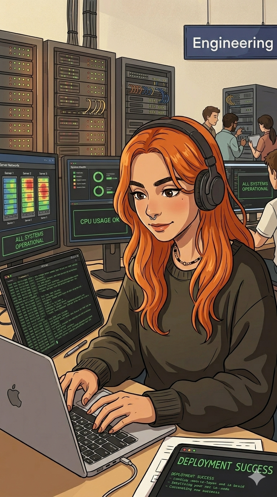

// Plano de carreira definitivo · Iniciante ao N3
Fases do plano
Base Absoluta de TI & Computação
// hardware · redes iniciais · SO · linha de comando · primeiro lab
// cursos & labs
// habilidades que você vai dominar
// rotina diária (5h)
Redes — Do Modelo OSI ao Troubleshooting Real
// TCP/IP profundo · subnetting · switching · routing · análise de tráfego
// cursos & labs
// habilidades que você vai dominar
// rotina diária (5h)
Linux & Windows Server — Administração Real
// systemd · bash scripting · Active Directory · GPO · PowerShell
// cursos & labs
// habilidades que você vai dominar
// rotina diária (5h)
Cloud & Segurança — Azure, Google Cloud, Fortinet
// AZ-104 · AZ-500 · Fortinet NSE · Google Cloud · containers
// cursos & labs
// habilidades que você vai dominar
// rotina diária (5h)
Automação, DevOps & Segurança Avançada
// Python · Ansible · Terraform · SC-900 · Google Cybersecurity · IBM Cybersecurity
// cursos & labs
// habilidades que você vai dominar
// rotina diária (5h)
Home Lab, Portfólio & Empregabilidade
// lab completo · GitHub · runbooks · simulados finais · currículo técnico
// cursos & labs finais
// entregas desta fase
// rotina diária (5h)
Mapa completo de certificações
Rotina semanal (5h/dia)
Dicas estratégicas
Lab antes de tudo
Monte seu ambiente no VirtualBox ou Proxmox na semana 1. Cada conceito estudado deve ter um lab correspondente imediato — sem isso, a retenção cai pela metade.
Caça vouchers gratuitos
Microsoft Learn Days, Cisco NetAcad challenges e Fortinet NSE oferecem vouchers de exame gratuitos regularmente. Monitore e economize centenas de reais.
Notion como segundo cérebro
Crie um workspace no Notion com uma página por fase, anotações de cada curso e um tracker de progresso. Reescrever com suas palavras consolida muito mais do que só assistir.
GitHub como portfólio
Publique seus scripts Bash, PowerShell e Python desde a fase 3. Um repositório com 10+ scripts reais e README documentados vale mais que 2 certificações em entrevistas.
Revisão espaçada com Anki
Crie decks Anki para subnetting, portas de protocolo, comandos Linux e cmdlets PowerShell. 15 minutos de revisão por dia evita que você esqueça o que estudou há 2 meses.
Comunidade acelera tudo
r/sysadmin, r/ccna, Discord TI Brasil, TechCommunity Microsoft. Dúvidas resolvidas em horas ao invés de dias. Networking real que pode gerar indicações.
Livros recomendados por fase
Sugestões de Home Lab
Simulados & Plataformas de prática